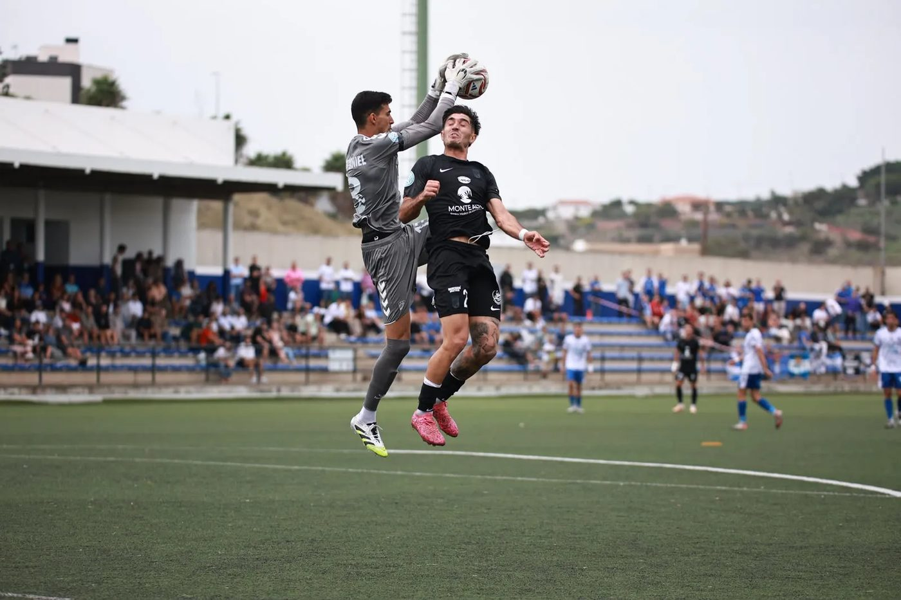
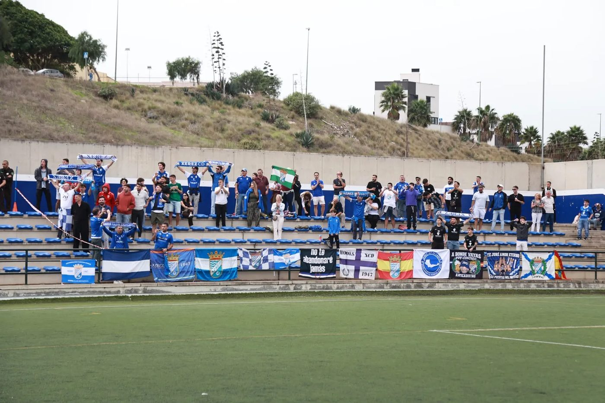

Xerez rediscover their scoring touch in the Fortunate Isles (1-3)
Xerez CD beat Tamaraceite 1-3 at the Juan Guedes with goals from Zequi, Chuma and Guille Campos. It is their second league win in a row and their first away from Chapín this season. Abel Segovia's side, who had scored only five goals in eight matchdays, scored three in a single match for the first time in the league.
A start that shaped the match
Xerez came out pressing high and quickly reaped the reward. In the 6th minute, Mario Peregrina won the ball from the home defence inside their own area and Zequi fired in the rebound to make it 0-1.
The goal ushered in Tamaraceite's best spell, as they penned the blue-and-whites in for much of the first half. Andrés Rivero and Toni Falcón tried their luck from outside the area and Carlos Pantoja responded with several important saves.

Photo: Xerez CDChuma strikes during the home side's best moment
With the islanders pushing forward, Xerez scored the second in the 25th minute. Guille Campos got to the byline on the right and delivered a cross to the near post that Chuma turned into the net. Shortly afterwards, Guille Campos cleared off the line a shot that was heading in and Pantoja stopped another from the rebound. Before half-time, Peregrina had the chance to make it three in a one-on-one that goalkeeper Carlos Daniel saved.
Guille Campos seals it and Rivero pulls one back
Right at the start of the second half, in the 46th minute, Guille Campos hooked home a rebound from a corner on the turn to make it 0-3. Tamaraceite did not give up and Andrés Rivero, unmarked at the far post, pulled one back in the 65th minute (1-3).
Segovia brought on Jaime López, Fali, Jaime Fernández, Víctor López and Óscar Lorenzo. Xerez defended the closing minutes in an orderly fashion and still had the odd counter-attack to extend their lead. The home crowd called for a penalty in an incident between Afonso and Chacartegui, but the referee did not give it. Next Sunday, Xerez visit Atlético Sanluqueño at El Palmar.

Photo: Xerez CDMatch facts
UD Tamaraceite: Carlos Daniel, Javi Afonso, Ramsés Perdomo, Bruno García, Carlos Delgado (Julio Báez, 58'), Andrés Rivero, Hugo Castellano, Toni Falcón (Antonio Hernández, 46'), Aitor Brito, Adrián Medina (Sergio Suárez, 46') and Jesús Farías (Sergio Ruiz, 58').
Xerez CD: Pantoja, Guille Campos (Víctor López, 78'), Moi, Josete, Chacartegui, Raúl López, Ismael (Óscar Lorenzo, 78'), Mario Peregrina (Fali, 71'), Zequi Díaz (Jaime López, 62'), Julito (Jaime Fernández, 71') and Chuma.
Goals: 0-1 (6') Zequi. 0-2 (25') Chuma. 0-3 (46') Guille Campos. 1-3 (65') Andrés Rivero.
Referee: Álvaro García Padilla (Madrid). He booked Moi, Chuma and Jaime López of Xerez CD, and Antonio Hernández of Tamaraceite.
Notes: ninth matchday of Segunda RFEF Group 4, played at the Juan Guedes. Around 100 Xerez supporters cheered the team on from the stand. A minute's silence was held for the victims of the train accident in Urda.
🇪🇸 Leer en español ← Back to home